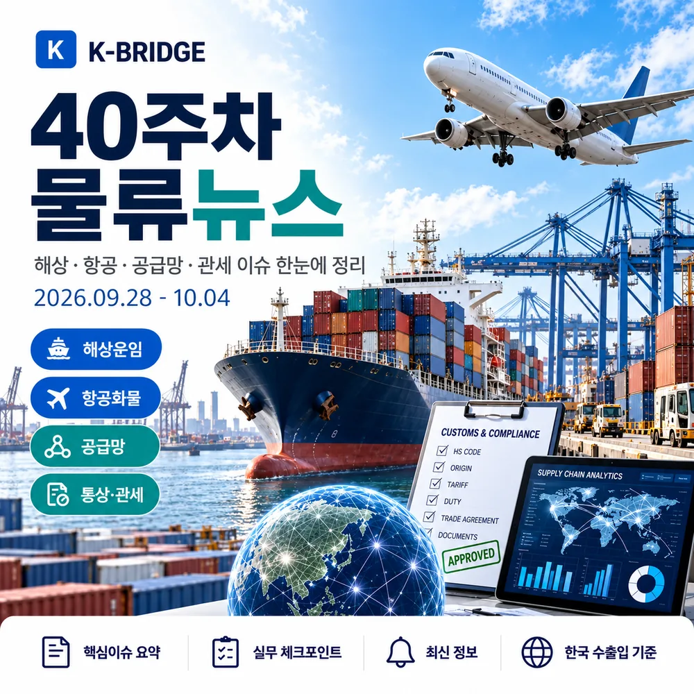
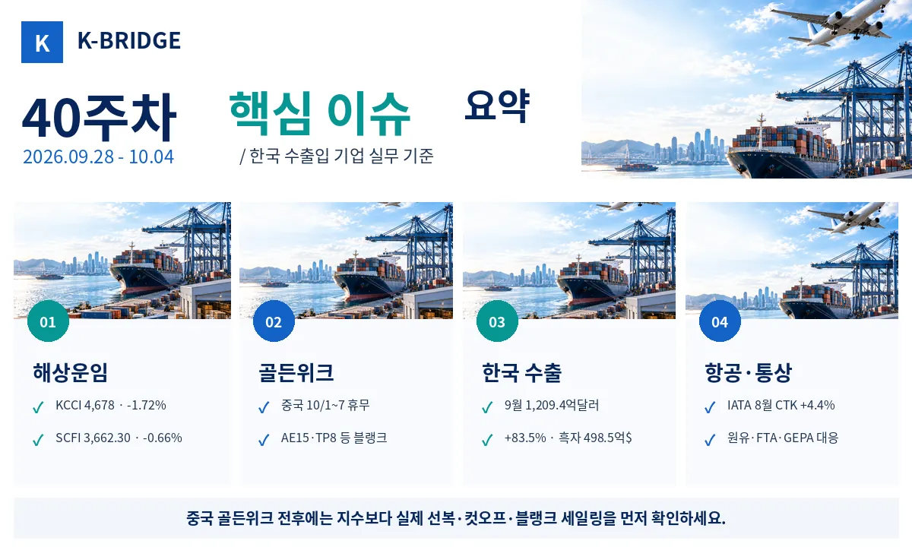
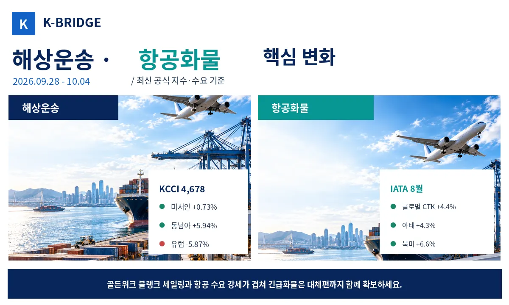
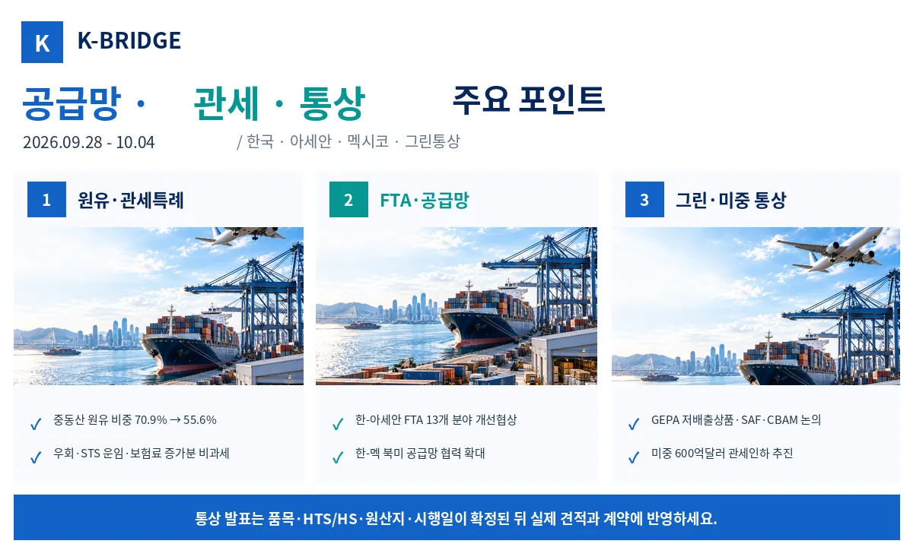
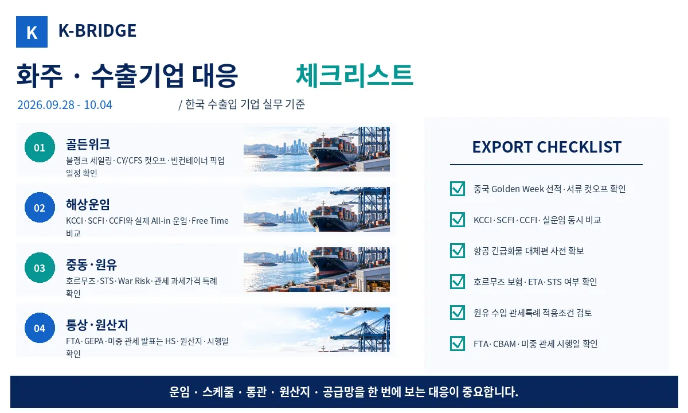

40주차 핵심 질문에 대한 답
이번 주에는 중국 골든위크 전후 선복 변화와 9월 한국 수출 급증을 가장 먼저 확인해야 합니다. KCCI는 4,678(-1.72%), SCFI는 3,662.30(-0.66%)로 하락했지만 CCFI는 1,923.93(+0.3%)로 상승했고 한국항로는 8.4%, 동남아는 9.1% 올랐습니다. 중국 국경절 연휴로 일부 아시아-유럽·태평양 서비스가 블랭크 처리됐으며, 9월 한국 수출은 1,209.4억달러(+83.5%)로 역대 최대를 기록했습니다. 항공화물은 IATA 8월 글로벌 CTK가 4.4% 증가했습니다.

1. 40주차 시장 한눈에 보기
40주차는 전체 컨테이너 운임은 조정받았지만 중국 골든위크로 실제 선복과 스케줄 변동성이 커진 주간입니다. 한국발 KCCI는 1.72% 하락했으나 미주 서안과 동남아는 상승했고, CCFI 한국·동남아 항로도 강했습니다. 동시에 9월 한국 수출이 사상 최대를 기록해 4분기 선복·항공 스페이스 관리가 중요해졌습니다.
| 지표 | 40주차 기준 | 변화 | 실무 해석 |
|---|---|---|---|
| KCCI | 4,678 | 9/28 · -1.72% | 미서안 +0.73%, 동남아 +5.94%, 유럽 -5.87% |
| SCFI | 3,662.30 | 9/30 · -0.66% | 상하이발 종합 스팟운임 완만한 하락 |
| CCFI | 1,923.93 | 9/30 · +0.3% | 한국 +8.4%, 동남아 +9.1%, 미서안 +4.1% |
| KDCI | 29,659 | 10/2 | 9/28 31,810 대비 약 6.8% 하락, 벌크 원자재 운임 조정 |
| IATA 글로벌 CTK | +4.4% | 8월 YoY | 아태 +4.3%, 북미 +6.6%, 총 공급 -0.1% |
| 9월 한국 수출 | 1,209.4억달러 | +83.5% | 반도체 603억달러, 무역흑자 498.5억달러 |
2. 해상운송·중국 골든위크
KCCI 4,678 - 유럽·중남미 약세, 미서안·동남아 상승
9월 28일 KCCI는 4,678로 전주 4,760 대비 82포인트, 1.72% 하락했습니다. 미주 서안은 8,000(+0.73%), 미주 동안은 11,294(+0.09%), 동남아는 1,391(+5.94%)로 올랐지만 유럽은 3,751(-5.87%), 지중해 4,016(-7.66%), 중남미 동안 8,063(-8.03%), 중남미 서안 6,211(-6.64%)로 하락했습니다.
SCFI 3,662.30 - 상하이발 종합지수 0.66% 하락
9월 30일 SCFI는 3,662.30으로 9월 24일 3,686.62보다 24.32포인트 하락했습니다. 중국 골든위크 직전 수요 변화와 노선별 공급 조정이 반영된 것으로 볼 수 있습니다. 다만 한국발 KCCI와 중국발 SCFI는 출발지·항로가 달라 실제 한국 견적과 동일하게 움직이지는 않습니다.
CCFI 1,923.93 - 한국·동남아·남아프리카 항로 상승
9월 30일 CCFI는 1,923.93(+0.3%)를 기록했습니다. 한국항로는 8.4%, 동남아는 9.1%, 남아프리카는 9.2%, 미주 서안은 4.1% 상승했습니다. 반면 페르시아만·홍해는 -2.7%, 유럽은 -2.9%였습니다. 아시아 역내 화물은 종합지수보다 개별 항로 지수를 보는 편이 실무적입니다.
중국 골든위크 - 블랭크 세일링과 컷오프 변경 확인 필요
중국 국경절 연휴(10월 1~7일)를 전후해 선사들은 수요와 현장 인력 감소에 맞춰 선복을 조정하고 있습니다. Maersk는 아시아-유럽 AE15의 Qingdao 9월 28일 항차를 블랭크 처리했고, Hapag-Lloyd도 아시아-지중해 SE3 Qingdao 9월 28일 항차를 취소했습니다. 이후 AE12·AE1과 TP8·TP12 등 10월 초 항차에도 조정이 예정돼 있습니다.
부산 출발 TP8도 10월 9일 조정 - 연휴 이후 롤오버 주의
Maersk의 태평양 서비스 조정에는 TP8 부산 출발 10월 9일 동향 항차 블랭크 계획도 포함돼 있습니다. 골든위크 기간 자체보다 연휴 직후 생산 재개 물량이 몰리면서 첫 번째 정상 항차의 스페이스가 부족해질 수 있습니다. 중국발·부산 환적 물량은 연휴 전후 2~3개 항차를 함께 비교하는 것이 안전합니다.
KDCI 29,659 - 벌크 원자재 운임도 주중 하락
KOBC 건화물선 종합지수 KDCI는 9월 28일 31,810에서 10월 2일 29,659로 약 6.8% 낮아졌습니다. 특히 Capesize 지수 조정이 컸습니다. 철광석·석탄·곡물 등 벌크 원자재를 수입하는 기업은 컨테이너 지수와 별개로 벌크선 운임을 따로 확인해야 합니다.

3. 항공화물·항공 공급망
IATA 8월 항공화물 +4.4% - 수요 증가, 공급은 0.1% 감소
IATA에 따르면 8월 글로벌 항공화물 수요(CTK)는 전년 대비 4.4%, 국제선은 5.3% 증가했습니다. 공급(ACTK)은 0.1% 감소해 수요가 공급보다 빠르게 늘었습니다. 아시아·태평양은 4.3%, 북미는 6.6% 증가했고 중동은 1.0%로 상대적으로 약했습니다.
인천공항 최신 공식 월간치 - 8월 화물 259,965톤, +8.5%
10월 4일 기준 인천공항의 최신 공표 월간 화물통계는 8월입니다. 화물은 259,965톤으로 전년 대비 8.5% 증가했고, 출발 화물은 10.6% 늘었습니다. 9월 한국 반도체·컴퓨터 수출이 급증한 점을 고려하면 4분기 미주·아시아 항공 스페이스는 미리 확인할 필요가 있습니다.
미국, 중국향 항공기 부품 수출허가 속도 조절
Reuters는 미국이 중국과의 통상협상 과정에서 일부 항공기 부품 수출허가 처리를 늦추고 있다고 보도했습니다. 유압유·랜딩기어 등 항공기 생산·정비에 필요한 품목이 거론돼, 중국 항공·항공기 생산 공급망과 관련된 한국 부품기업도 납기·최종사용자·재수출 규정을 함께 모니터링할 필요가 있습니다.
4. 한국 수출·통관
9월 수출 1,209.4억달러 - 사상 첫 월 1,200억달러 돌파
산업통상부와 관세청 잠정치에 따르면 9월 수출은 1,209.4억달러(+83.5%), 수입은 710.9억달러(+26.0%), 무역수지는 498.5억달러 흑자를 기록했습니다. 1~9월 누적 수출도 8,145억달러로 처음 8천억달러를 넘어섰습니다.
반도체 수출 603억달러 - 단일 품목 사상 최대
9월 반도체 수출은 603억달러(+262.8%)로 월간 기준 처음 600억달러를 넘었습니다. 컴퓨터 수출도 70억달러(+435.3%)로 크게 증가했습니다. 반도체·전자제품의 고부가가치 수출 확대는 항공화물·보안운송·긴급통관 수요를 동시에 키울 수 있습니다.
중동 수출은 -14.1% - 호르무즈 물류가 실제 수출에 영향
지역별로 중국·미국·아세안·EU 수출은 증가했지만 중동 수출은 16억달러로 14.1% 감소했습니다. 산업통상부는 호르무즈 해협 통항의 어려움으로 자동차·부품·일반기계 등 다수 품목 수출이 감소했다고 설명했습니다. 중동향 계약은 단순 운임뿐 아니라 선복·보험·도착예정일을 함께 봐야 합니다.

5. 공급망·에너지 물류
호르무즈 LNG 흐름 회복 - 9월 선적은 전쟁 이후 최고
Reuters 집계에서 9월 호르무즈를 통과한 LNG 선적은 분석기관 기준 19~21건으로 전쟁 시작 이후 월간 최고 수준을 기록했습니다. QatarEnergy 연계 선박들의 통항도 늘었습니다. 다만 일부 선박은 AIS를 끄는 '다크 트랜짓'을 사용하고 있어 정상화로 단정하기는 어렵습니다.
10월 1일 유조선 3척 피격 - 회복 속에서도 보안 리스크 지속
10월 1일 호르무즈 해협을 통항하던 유조선 3척이 발사체에 맞았다는 해상정보 보고가 나왔습니다. LNG·원유 물동량은 회복 중이지만 보안 위험은 여전히 현실적입니다. 중동향 화물은 War Risk, 선박의 AIS 정책, 보험 조건과 우회 가능성을 항차별로 확인해야 합니다.
원유 수입선 다변화 - 관세·운임 특례까지 확대
관세청은 10월 2일 중동산 원유 수입 비중이 70.9%에서 55.6%로 낮아지고 북미·아프리카 조달이 확대되고 있다고 밝혔습니다. 미국산 원유를 파나마 송유관을 거쳐 들여오는 경우에도 FTA 특혜관세 적용을 지원하고, 홍해·수에즈·희망봉 우회 또는 호르무즈 STS 이용으로 늘어난 운임·보험료를 과세가격에서 제외하는 특례를 추진합니다.
6. FTA·관세·통상
한-아세안 FTA 개선 - 디지털·핵심광물·공급망 포함 13개 분야
9월 28일부터 10월 1일까지 싱가포르에서 한-아세안 FTA 개선 제2차 공식협상이 열렸습니다. 상품·서비스뿐 아니라 디지털, 핵심광물, 공급망, 지식재산권 등 총 13개 분야가 협상 대상입니다. 아세안에 생산거점이나 공급처를 둔 기업은 원산지 규정과 공급망 조항 변화를 미리 모니터링할 필요가 있습니다.
GEPA 협상 - 저배출 상품·SAF·CBAM 공통기준 논의
한국·뉴질랜드·싱가포르·칠레는 서울에서 그린경제협정(GEPA) 제2차 협상을 진행했습니다. EU CBAM과 같은 기후조치가 불필요한 무역장벽이 되지 않도록 공통 기준을 논의하고, 저탄소 철강 등 저배출 상품과 항공 분야 지속가능항공유(SAF) 협력도 다뤘습니다.
한-멕시코 협력 - 북미 공급망 연결 강화
한국과 멕시코는 경제·산업·자원 협력 이니셔티브를 체결하고 향후 무역협정의 잠재적 효과를 분석하는 공동이익 연구에 착수하기로 했습니다. 자동차·전기전자·배터리 등 북미 공급망을 활용하는 한국 기업에는 멕시코 현지 생산·조달·원산지 구조가 더 중요해질 수 있습니다.
G20 통상장관회의 - 철강 과잉생산·회복력 있는 공급망 논의
9월 30일~10월 1일 G20 통상장관회의와 철강 공급과잉 글로벌 포럼에서 구조적 과잉생산, 무역구제, 강제노동 제거, 공급망 회복력이 논의됐습니다. 철강·소재 수출입 기업은 향후 주요국 반덤핑·상계관세·원산지 규정 강화 가능성을 함께 봐야 합니다.
미중, 600억달러 규모 상호 관세인하 추진 - 세부 시행은 확인 필요
미국과 중국은 각각 300억달러 규모의 비민감 수입품에 대해 관세를 낮추는 방향으로 후속 협상을 진행하고 있습니다. 미국산 농산물·의료기기와 중국산 소형가전·완구 등이 거론됐습니다. 동시에 미국이 일부 중국향 항공기 부품 수출허가를 늦추는 움직임도 있어, 미중 통상환경은 완화와 통제가 동시에 진행되는 상황입니다.

7. 화주·수출기업 대응 체크리스트
- 중국 골든위크: 공장·창고 휴무일과 CY/CFS·서류 컷오프, 빈컨테이너 픽업 일정을 각각 확인합니다.
- 해상운임: KCCI·SCFI·CCFI를 함께 보고 실제 선사 All-in 운임, PSS, Free Time까지 비교합니다.
- 연휴 이후 선복: 블랭크 항차 다음 주에 롤오버가 몰릴 수 있으므로 2~3개 대체항차를 확보합니다.
- 항공: 반도체·전자제품은 메인편과 대체편을 동시에 확인하고 연료비·보안·긴급통관 조건을 점검합니다.
- 호르무즈: War Risk, AIS 정책, STS 환적, 보험료와 ETA 버퍼를 항차별로 확인합니다.
- 원유 수입: 파나마 송유관 경유 FTA 특례와 우회·STS 운임·보험료의 과세가격 제외 가능성을 검토합니다.
- 아세안·멕시코: 공급망 협력 확대에 맞춰 조달국·가공국·원산지 결정기준을 함께 확인합니다.
- 그린통상: CBAM·GEPA·SAF 관련 데이터는 계약 단계부터 품목·배출량·공급망별로 축적합니다.
- 미중 통상: 관세 인하 발표는 실제 HTS, 세율, 발효일이 공식화된 뒤 거래조건에 반영합니다.
KEY TAKEAWAYS
이 글에서 기억할 것
- KCCI 4,678 · -1.72%
- CCFI 한국항로 · +8.4%
- 9월 수출 1,209.4억달러 · +83.5%
- IATA 8월 CTK · +4.4%
8. 자주 묻는 질문
Q. 40주차 KCCI는 얼마인가요?
Q. 중국 골든위크에는 중국발 선적이 모두 중단되나요?
Q. 9월 한국 수출은 얼마나 늘었나요?
Q. 호르무즈 리스크가 완화됐나요?
NEXT STEP
이 글과 함께 보면 좋은 자료
40주차는 골든위크 이후 실제 선복과 컷오프 확인이 핵심입니다
케이브릿지는 해상·항공·통관·국내운송을 연결해 운임지수뿐 아니라 블랭크 세일링, 호르무즈 리스크, 원산지·관세와 실제 도착일정까지 함께 검토합니다.